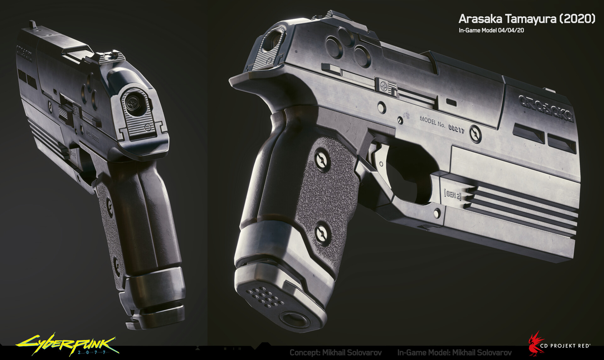
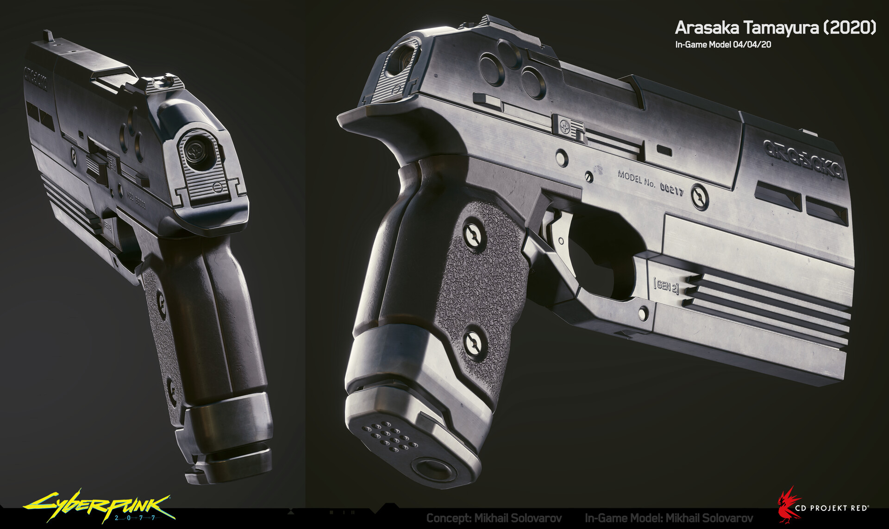

One of the oldest weapons made by Arasaka from the early 2000s. These days it's a rare sight on the street, as it's a pistol that is - no point in sugarcoating it - outdated and difficult to maintain. Spare parts for it are no longer manufactured, and it's no longer compatible with most standard weapon mods. That being said, should it be held up to someone's head and have its trigger is pulled, the end result will still be as conclusive as with any modern firearm.
Tamayura
€$5,900.00
The Tamayura is a 2nd generation semi-automatic heavy pistol designed and manufactured by the Arasaka Corporation since the early years of the 21st century. Despite its age, it is still a standard-issue sidearm for Arasaka security personnel, being a reliable defensive weapon. The Tamayura has a slow rate of fire but deals high damage in return. Each round fired causes high recoil. The weapon uses Handgun Ammo and has a magazine size of 8 rounds, that is slow to reload. The Tamayura can be modified with a Short Scope and a Muzzle attachment.